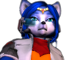
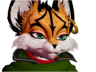
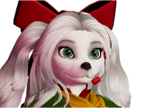
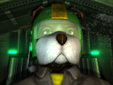

Personnel Database
Team Star Fox

Fox McCloud
LeaderThe leader of the Star Fox team. Fox balances a sense of duty with elite piloting skills, leading the fight against the Venomian threat.

Falco Lombardi
Ace PilotThe ace pilot of the team. He can be a bit short-tempered, but he always helps out his friends.

Peppy Hare
Veteran PilotThe original member of the Star Fox team with James and Pigma. After finding out Andross is back, he joined the team with James's son, Fox.

Slippy Toad
EngineerThe engineer of the team. Specializing in weapon upgrades and analyzing weakpoints, but can be a bit too scientific with his words.

Fara Phoenix
Stunt PilotShe met Fox a while back. She's known as a test pilot for the Cornerian army, until she got fired and worked for the Cornerian Police. She joined the StarFox team to take down Andross.

Krystal
TelepathThe first new member of the team. After saving Sauria, she was offered to join the team and teach her how to fly an Arwing.

Miyu Lynx
ScoutAfter working with her partner for just mercenary missions, she joined the team and is now a scout for the team.

Fay Spaniel Collie
EngineerShe worked alongside Miyu, upgrading arwings for certain missions. Longtime fan of StarFox, until she finally got recruited.

ROB 64
Intelligent SystemAn Artificial System for the StarFox team. Helpful for piloting the Great Fox.
Team Star Wolf

Wolf O'Donnell
LeaderLeader of the Star Wolf team. A well-known rival of Fox and a mercenary.

Leon Powalski
AssassinAn assassin in the Cornerian Army, joined Starwolf to fight against Corneria

Pigma Dengar
Veteran MercenaryUsed to be a member of StarFox until he betrayed the team. He used to work for Venom, until he joined StarWolf.

Andrew Oikinny
Andross's RelativeHe's the nephew of Andross. Not to mention, he's almost as smart as him. He now serves as a pilot for StarWolf.
Cornerian Army

General Pepper
GeneralThe leader of the Cornerian Army. He once trusted Andross before placing him in Venom.

Colonel Shears
ColonelThe second-in-command of General Pepper.

Bill Grey
SoldierLong-time member of the Cornerian Army, and a close friend of Fox.